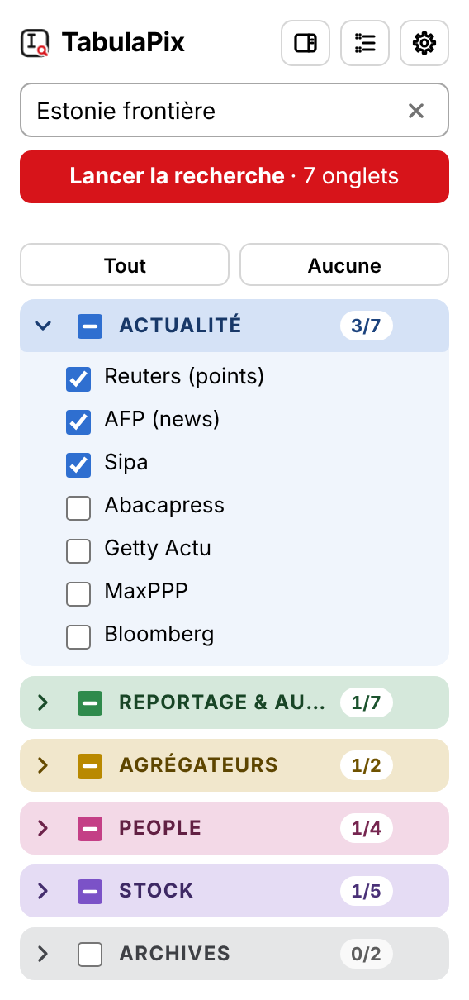

Une recherche, toutes vos agences photo
Tapez vos mots-clés une seule fois : TabulaPix ouvre chaque agence dans son onglet, résultats prêts, avec vos propres comptes.
Pour les services photo, les iconographes et les éditeurs photo qui cherchent toute la journée les mêmes mots sur dix sites.
Pour Chrome sur ordinateur. Open source, aucune donnée collectée ; un abonnement à chaque agence reste nécessaire. À l'installation, Chrome demande à « consulter votre historique de navigation » : c'est pour réutiliser l'onglet d'une agence déjà ouvert.
 TabulaPix
TabulaPix- Actualité3/7
- Reportage & auteurs1/7
- Agrégateurs1/2
- People1/4
- Stock1/5
- Archives0/2
Comment ça marche
- Cochez vos agencesPrès de trente agences et banques d'images sont prêtes, rangées en dossiers de couleur : actualité, reportage, agrégateurs, people, stock, archives. Gardez celles de vos abonnements.
- Tapez vos mots-clés, une foisDans la fenêtre de l'extension : un clic sur son icône, ou Alt + Maj + Y. Pour enchaîner les recherches, gardez-la ouverte en colonne à droite de la page.
- Appuyez sur EntréeUn onglet par agence s'ouvre en arrière-plan. Un onglet d'agence déjà ouvert est réutilisé, au lieu d'en ouvrir un de plus.

Vos agences, rangées à votre façon
Renommez, recolorez, réordonnez vos dossiers ; masquez les agences que vous n'utilisez pas.
Il manque la vôtre ? Collez l'adresse d'une page de résultats : TabulaPix trouve où se placent les mots-clés. Si le site ne les met pas dans l'adresse, il repère son champ de recherche et le remplit pour vous.
Partager avec un collègue
Partagez une agence ou tout un dossier avec un court code, à coller dans Slack, Teams ou un e-mail. Votre collègue le colle dans TabulaPix : ce qui lui manque est ajouté, rien de chez lui n'est retiré ni modifié.
La configuration s'exporte aussi dans un fichier ; à l'import, TabulaPix indique ce qui va changer avant de l'appliquer.
TabulaPix:1:H4sIAAAAAAAAA3WOwQrCMBBEf2Xp…exemple de code de partage
Rien ne quitte votre ordinateur
- Aucun serveur, aucun compte. TabulaPix fonctionne entièrement dans votre Chrome.
- Rien n'est envoyé ailleurs. L'extension se contente d'ouvrir des onglets, comme si vous tapiez l'adresse vous-même ; ses réglages de sécurité lui interdisent toute autre connexion.
- Aucune donnée collectée. Vos réglages restent dans Chrome, sur votre ordinateur. Seule la dernière recherche est gardée.
- Une seule autorisation annoncée à l'installation : « Consulter votre historique de navigation », pour réutiliser l'onglet d'une agence déjà ouverte. Les autres ne sont demandées que si vous cochez une agence qui en a besoin, et pour ce seul site.